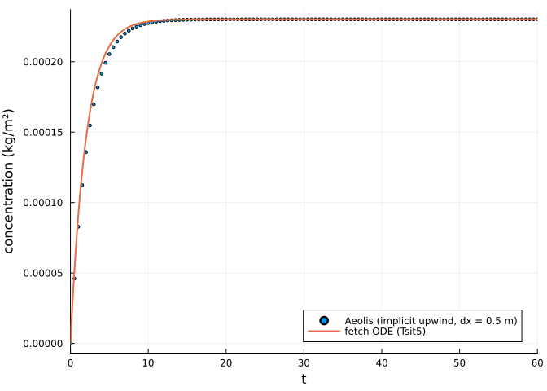
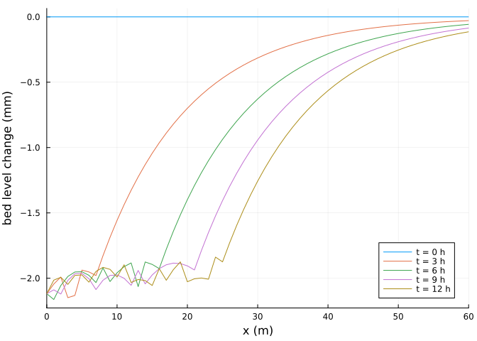
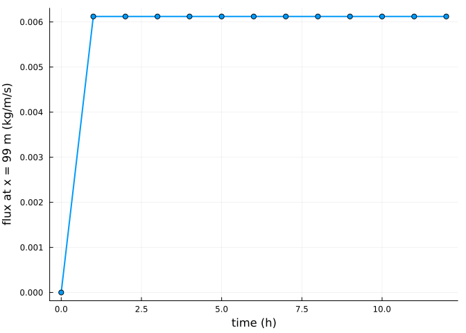

Fetch and supply limitation
Simon Frost
Overview
AeoLiS solves an advection equation for the sediment concentration in the air C, which relaxes towards the saturated concentration Cu over the adaptation time T (Hoonhout and de Vries 2016):
\[\frac{\partial C}{\partial t} + u \frac{\partial C}{\partial x} = \frac{C_u - C}{T}.\]
In steady state with unlimited supply, the concentration grows along the fetch as the solution of an ordinary differential equation, dC/dx = (Cu - C) / (u T). This vignette checks the model against that solution, computed with OrdinaryDiffEq, and then limits the supply with a non-erodible layer.
ENV["GKSwstype"] = "100"
using Aeolis
using OrdinaryDiffEq
using PlotsFetch with unlimited supply
A flat transect of 60 m with grain velocities equal to the wind (method_grainspeed = :windspeed) makes u and Cu uniform. The adaptation time is raised to 0.2 s so the adaptation length u T spans a few cells.
x = collect(0.0:0.5:60.0)
p = AeolisParameters(; xgrid_file=x, bed_file=fill(2.0, length(x)),
wind_file=[0.0 10.0 270.0; 86400.0 10.0 270.0], grain_size=0.0003,
method_grainspeed=:windspeed, T=0.2, dt=60.0, tstop=600.0,
output_times=600.0, output_vars=[:Ct, :Cu, :u])
sol = solve(AeolisProblem(p))
C = transect(sol, :Ct)[:, 1, end]
Cu = transect(sol, :Cu)[2, 1, end]
u = transect(sol, :u)[2, 1, end]
(Cu=Cu, u=u, adaptation_length=u * p.T)(Cu = 0.00023007629540473118, u = 10.0, adaptation_length = 2.0)The fetch equation, solved with an adaptive ODE solver:
fetch(C, par, x) = (par.Cu - C) / (par.u * par.T)
ode = ODEProblem(fetch, 0.0, (0.0, 60.0), (; Cu, u, T=p.T))
exact = solve(ode, Tsit5(); reltol=1e-10, abstol=1e-12)
scatter(x, C; ms=2, label="Aeolis (implicit upwind, dx = 0.5 m)", xlims=(0, 30),
xlabel="fetch (m)", ylabel="concentration (kg/m²)")
plot!(exact; lw=2, label="fetch ODE (Tsit5)")
The implicit first-order upwind scheme of AeoLiS gives the exponential approach with a numerical diffusion that depends on the cell size dx compared with u T. For each cell the discrete solution is C_i = (C_{i-1} + a Cu) / (1 + a) with a = dx / (u T), so it lags the exact solution; the gap shrinks as dx / (u T) falls:
err(dx) = begin
xx = collect(0.0:dx:60.0)
q = remake_parameters(p; xgrid_file=xx, bed_file=fill(2.0, length(xx)))
s = solve(AeolisProblem(q))
c = transect(s, :Ct)[:, 1, end]
maximum(abs.(c .- exact.(xx))) / Cu
end
[(dx=dx, max_relative_error=round(err(dx); sigdigits=3)) for dx in (2.0, 1.0, 0.5, 0.25)]4-element Vector{@NamedTuple{dx::Float64, max_relative_error::Float64}}:
(dx = 2.0, max_relative_error = 0.132)
(dx = 1.0, max_relative_error = 0.0766)
(dx = 0.5, max_relative_error = 0.0417)
(dx = 0.25, max_relative_error = 0.0219)Supply limitation
Now the bed carries only 2 mm of loose sand over a non-erodible layer (ne_file, with th_nelayer making the threshold infinite where the bed reaches it). The upwind part of the transect is stripped of sand, after which the fetch starts further downwind.
x = collect(0.0:1.0:100.0)
q = AeolisParameters(; xgrid_file=x, bed_file=fill(2.0, length(x)),
ne_file=fill(2.0 - 0.012, length(x)), th_nelayer=true,
wind_file=[0.0 12.0 270.0; 86400.0 12.0 270.0], grain_size=0.0003,
nlayers=3, layer_thickness=0.002, dt=600.0, tstop=12 * 3600.0,
output_times=3600.0, output_vars=[:zb, :Ct, :qs])
sl = solve(AeolisProblem(q))
zb = transect(sl, :zb)
plot(x, 1000 .* (zb[:, 1:3:end] .- zb[:, 1]); xlabel="x (m)",
ylabel="bed level change (mm)", label=permutedims(["t = $(Int(t / 3600)) h"
for t in sl.t[1:3:end]]),
xlims=(0, 60))
The flux leaving the transect falls as the sand runs out:
qs = transect(sl, :qs)
plot(sl.t ./ 3600, qs[end - 1, 1, :]; lw=2, marker=:circle, xlabel="time (h)",
ylabel="flux at x = 99 m (kg/m/s)", label="")
References
Hoonhout, Bas M., and Sierd de Vries. 2016. “A Process-Based Model for Aeolian Sediment Transport and Spatiotemporal Varying Sediment Availability.” Journal of Geophysical Research: Earth Surface 121: 1555–75. https://doi.org/10.1002/2015JF003692.